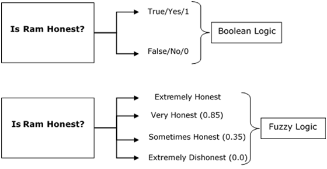
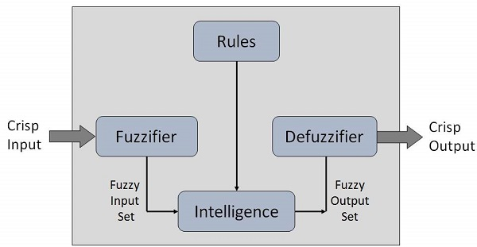

Fuzzy Logic¶
The term fuzzy mean things which are not very clear or vague. In real life, we may come across a situation where we can't decide whether the statement is true or false. At that time, fuzzy logic offers very valuable flexibility for reasoning. We can also consider the uncertainties of any situation.
Fuzzy logic algorithm helps to solve a problem after considering all available data. Then it takes the best possible decision for the given the input. The FL method imitates the way of decision making in a human which consider all the possibilities between True and False.

When not to use fuzzy logic¶
However, fuzzy logic is never a cure for all. Therefore, it is equally important to understand that where we should not use fuzzy logic.
Here, are certain situations when you better not use Fuzzy Logic:
- If you don't find it convenient to map an input space to an output space
- Fuzzy logic should not be used when you can use common sense
- Many controllers can do the fine job without the use of fuzzy logic
Fuzzy Logic Systems Architecture¶

Fuzzy Logic architecture has four main parts as shown in the diagram:
Rule Base:¶
It contains all the rules and the if-then conditions offered by the experts to control the decision-making system. The recent update in fuzzy theory provides various methods for the design and tuning of fuzzy controllers. This updates significantly reduce the number of the fuzzy set of rules.
Fuzzification:¶
Fuzzification step helps to convert inputs. It allows you to convert, crisp numbers into fuzzy sets. Crisp inputs measured by sensors and passed into the control system for further processing. Like Room temperature, pressure, etc.
Inference Engine:¶
It helps you to determines the degree of match between fuzzy input and the rules. Based on the % match, it determines which rules need implment according to the given input field. After this, the applied rules are combined to develop the control actions.
Defuzzification:¶
At last the Defuzzification process is performed to convert the fuzzy sets into a crisp value. There are many types of techniques available, so you need to select it which is best suited when it is used with an expert system.